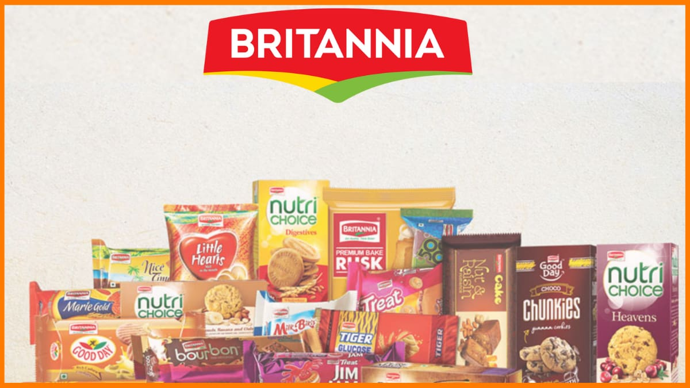

Overview
We demand the best of ingredients and package their natural goodness in our products,without compromise.
Britannia Industries is one of India’s leading food companies with a 100 year legacy and annual revenues in excess of Rs. 9000 Cr. Britannia is among the most trusted food brands, and manufactures India’s favorite brands like Good Day, Tiger, NutriChoice, Milk Bikis and Marie Gold which are household names in India. Britannia’s product portfolio includes Biscuits, Bread, Cakes, Rusk, and Dairy products including Cheese, Beverages, Milk and Yoghurt. Britannia is a brand which many generations of Indians have grown up with and our brands are cherished and loved in India and the world over. Britannia products are available across the country in close to 5 million retail outlets and reach over 50% of Indian homes. The company’s Dairy business contributes close to 5 per cent of revenue and Britannia dairy products directly reach 100,000 outlets. Britannia Bread is the largest brand in the organized bread market with an annual turnover of over 1 lac tons in volume and Rs.450 crores in value. The business operates with 13 factories and 4 franchisees selling close to 1 mn loaves daily across more than 100 cities and towns of India. We have a presence in more than 60 countries across the globe. Our international footprint includes presence in Middle East through local manufacturing in UAE and Oman, are the No 2 biscuit player in UAE with a strong contention to leadership and have a similarly strong market position in the other GCC countries. We are also the market leaders in Nepal and are in the process of investing a manufacturing facility in the country. Our foot print spreads across North America, Europe, Africa and South East Asia through exports and we are investing in a state- of- the- art facility in Mundra SEZ, Gujarat, to service the exports markets. Our strategic expansion plan is based on the principle of ‘One new market a year’. We plan to expand through local operations in Africa and South East Asia in the coming years.
 "
"